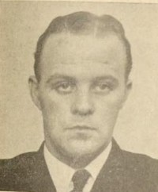

Skild 17 okt 1953 16 .
Ingrid Linnea Johansson f Nilsson.

Född 16 sep 1915 i Östra Ny (E) 17 .
Död 26 jul 1962 på Råstensgatan 5, Sundbyberg (AB) 1 .
|
Född
16 feb 1916
i Västerås domkyrkoförsamling (U)
1
.
Död 9 sep 1969 på Eriksgatan 31, Luthagen, Uppsala, Uppsala domkyrkoförsamling (C) 1 . |
 |
|
Alf Georg Johansson
Född 16 feb 1916 i Västerås domkyrkoförsamling (U) 1 . Död 9 sep 1969 på Eriksgatan 31, Luthagen, Uppsala, Uppsala domkyrkoförsamling (C) 1 . |
|||
|
Gift
11 mar 1939
i Spånga (AB)
14
.
Skild Maja-Lisa Rappne. Född 26 nov 1918 i Åker (D) 1 . Död 15 aug 2008 i Avesta (W) 1 . |
|
Gift
10 apr 1946
15
.
Skild 17 okt 1953 16 . Ingrid Linnea Johansson f Nilsson.
Född 16 sep 1915 i Östra Ny (E) 17 . Död 26 jul 1962 på Råstensgatan 5, Sundbyberg (AB) 1 . |
Framställd 6 nov 2026 med hjälp av Disgen version 2025.